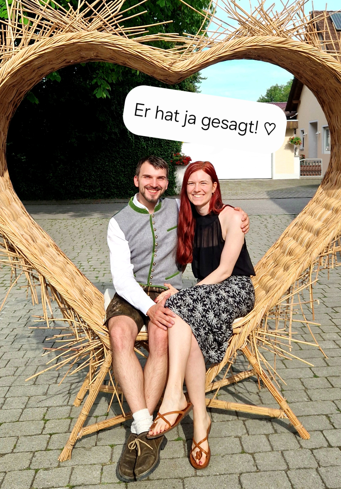

Abgesehen von einem kleinen Scherz ist es hier noch still . . . aber nicht mehr lange! An dieser Stelle entsteht nach der Feier (oder vielleicht schon am Abend selbst) unser gemeinsamer Sammelplatz für Erinnerungen. Über einen Link wirst du:
📥 Hochladen: Deine besten Schnappschüsse und schönsten Eindrücke
📤 Herunterladen: Fotos von anderen Gästen
🎞️ Ansehen: Die professionellen Bilder von unserer lieben Fotografin Laurence
Und vielleicht gibt es ja für den ein oder anderen eine kleine Foto-Mission . . . mehr wird noch nicht verraten – aber eure Perspektive wird am Ende Gold wert sein!


